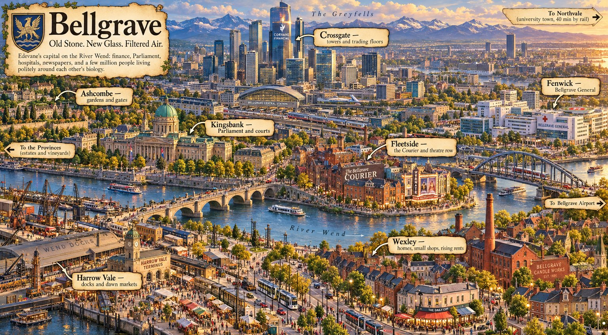

Modern Omegaverse City Life · Kingdom of Edevane
Old Stone. New Glass. Filtered Air.
Edevane's capital on the River Wend: finance, Parliament, hospitals, newspapers, and a few million people living politely around each other's biology. Hover a dot on the map to see a district. Pick a card below to open its wiki page.

Hover or tap the orange dots. On a phone, swipe the map sideways.
Addresses read District / Neighborhood / Place.
← Modern Omegaverse City Life · Map v0.2 · painted map, panorama version. Names marked draft may still change.